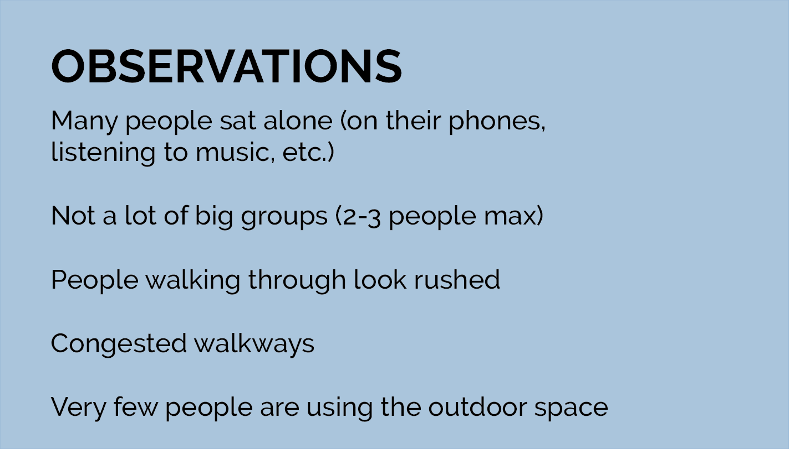
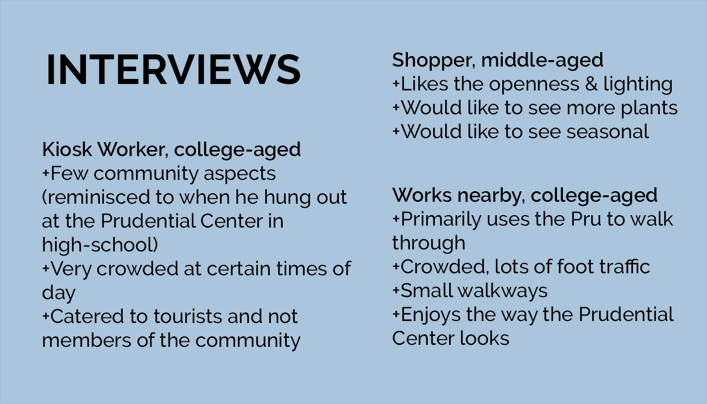
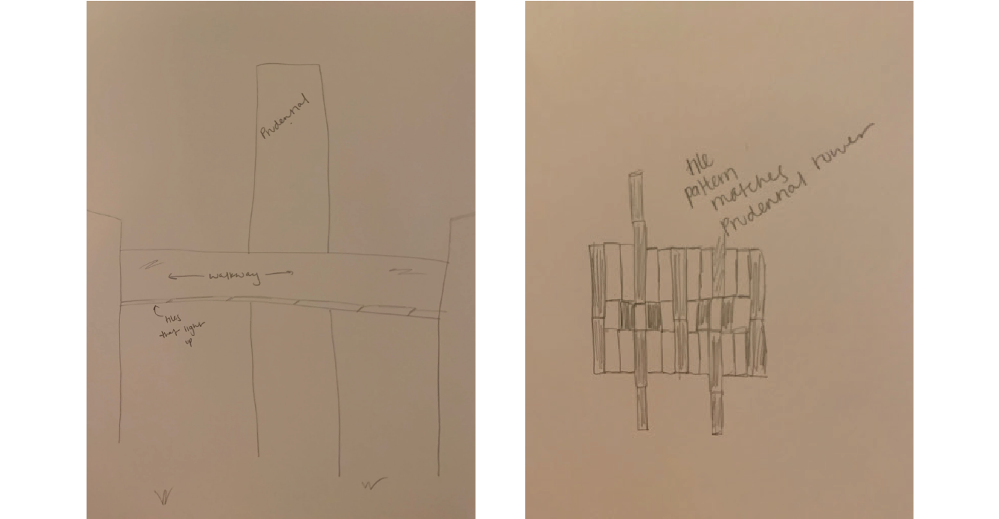
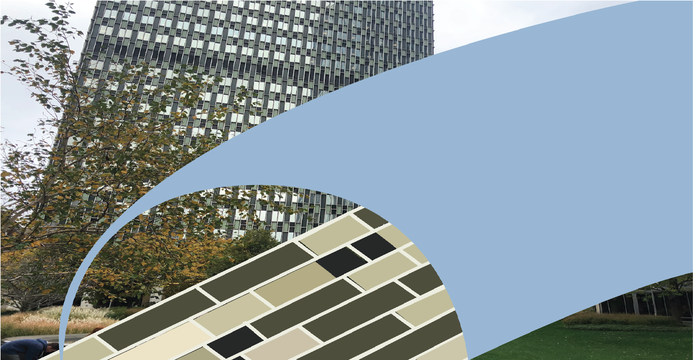
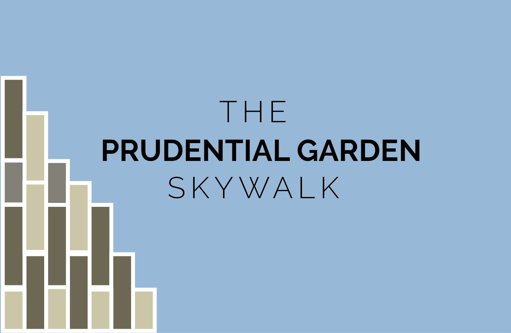
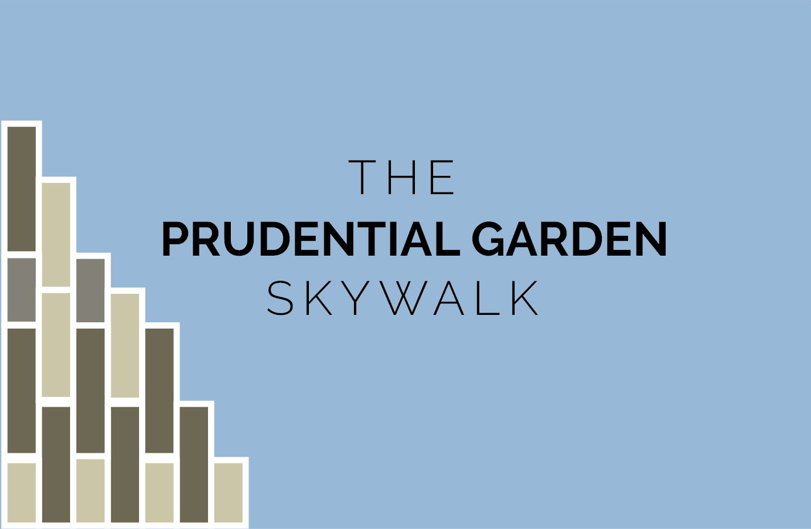

Prudential Garden Skywalk
Class: 5D (experience) Fundamentals Tools: Adobe Illustrator, pen + paper
Overview
The goal of this project was to create an installation designed to improve the user experience of a site in Boston. My group (three teammates) and I chose to focus on the Prudential Center.
The Prudential Garden Skywalk is an installation concept designed to make the garden space
at Boston's Prudential Center accomodate more user needs through creating an interactive community space.
Research
We started our research by going to the Prudential and writing down observations on how people interacted
with the space. The Pru is big, so we decided to focus on the area near the Huntington Avenue entrance.

We then interviewed people in the Center to learn how this space makes them feel, what they use it for,
and what potential improvements they would like to see.

Concept + sketches
From our own observations, we noted that the garden space was underutilized and very spacious.
From our interviews, we concluded a need for a community space, but noted a consensus of the walkways getting crowded.
We decided to build a walkway that connects different wings of the Pru to help the flow of foot traffic
during busy times. By installing a visually appealing piece, we hope to promote the use of the garden
and better foster a place for the community to gather in this currently underutilized space.

The tunnel walls are glass to provide a nice view and the floor is tiled in a pattern that mimics the tiles
on the Prudential Tower.

 The floor of the tunnel is also interactive - the tiles light up when stepped on. This creates a component that is visually appealing for both the users of the tunnel
as well as people underneath it using the outdoor area.
The floor of the tunnel is also interactive - the tiles light up when stepped on. This creates a component that is visually appealing for both the users of the tunnel
as well as people underneath it using the outdoor area.
 
